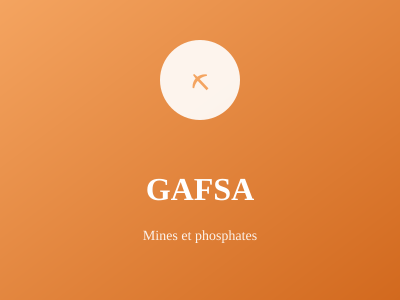

Bassin minier du phosphate

Bassin minier du phosphate tunisien, Gafsa est un centre minier majeur. La région combine activité minière moderne et patrimoine archéologique romain impressionnant avec ses vestiges antiques.